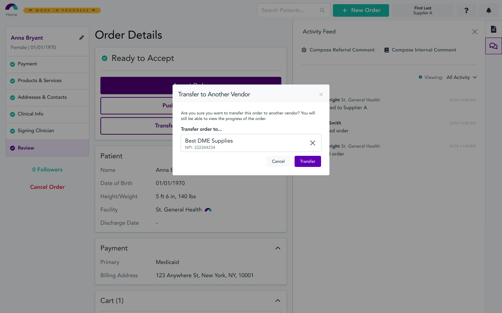
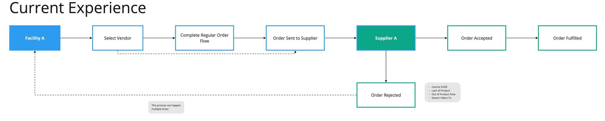
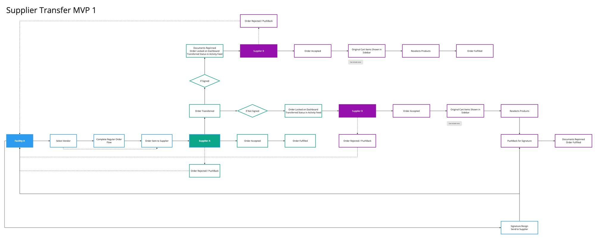
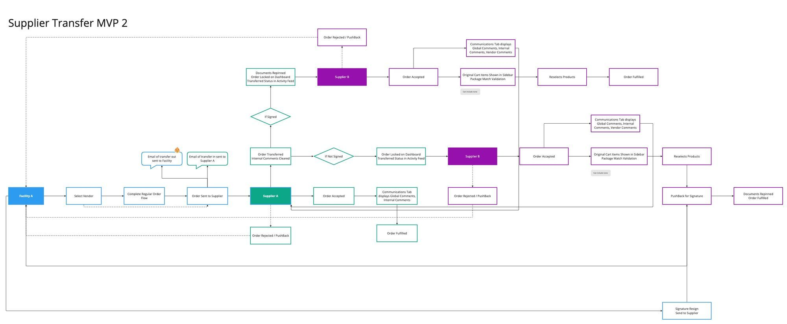

- Web app
- Healthcare
- Flows and scoping
Helping Parachute Health suppliers hand off orders they can't fill
Let suppliers pass orders they can't fill to another supplier, instead of leaving them stuck or canceled.

- My role
- Product Designer
- The only designer on the project
- Timeline
- January to June 2022
- Team
- Lead PM, lead engineer and the engineering team, a data partner, and me
- Platform
- Web app for healthcare facilities and suppliers
The short version
The challenge
When a supplier couldn't fulfill an order, it sat on their dashboard indefinitely or got canceled, and the facility had to place it again with someone else.
What I did
Research synthesis, MVP release scoping, user flow mapping, and UX design, with a focus on the UI for supplier-to-supplier communication.
The outcome
Orders can now route to suppliers who can fill them. Glassbox session recordings showed suppliers using the feature right after launch.
Methods and skills
- Research synthesis
- User flow mapping
- Scope refinement
- UX and UI design
- Prototyping
- Documentation
Orders with nowhere to go
Parachute Health's platform lets healthcare facilities order Durable Medical Equipment (DME) and supplies. There are two main actors in this flow: facilities and suppliers. Facilities place orders for patients, and suppliers then receive these orders to fulfill.
Sometimes, and often enough from the volume of complaints we received about this use case, suppliers cannot fulfill orders for a number of reasons. Before this feature rolled out, those orders would simply sit on the supplier's order dashboard indefinitely or need to be canceled, which made facilities remake the order entirely and try a different supplier.
With this in mind, our team set out to construct data model changes and a congruent experience with the rest of our platform so suppliers could send orders they can't fulfill to other suppliers.
Mapping the flows to scope each release
There are several moving parts in this experience. We were also changing a model relationship from one-to-one to one-to-many, which adds complexity with every new actor. To align the team on which features belonged in each release, and to make sure we were thinking about the end-to-end flow, I mapped the current experience and both MVPs.



Key decisions
Allow an order to be transferred more than once
The situation
The first supplier an order is sent to isn't always the right one, and neither is the second.
What we chose
The data model moved from one-to-one to one-to-many, so an order can be sent more than once to find a supplier who can fill it. Our data shows it usually doesn't go past one transfer.
The trade-off
Design and technical complexity grow quickly as you add actors. What does the Communication tab look like when an order has been transferred six times?
Ship in two MVPs and focus design on supplier-to-supplier communication
The situation
The full experience touched facilities, multiple suppliers, statuses, and messaging, on a tight timeline.
What we chose
Our PM rigorously scaled the scope of each release, which let me focus design on specific parts of the experience, mainly the UI for vendor-to-vendor communication.
Why
It's a highly visible, user-facing feature that suppliers frequently requested.
Designs and annotated prototype
The annotated Figma prototype walks through the full experience and flow, with notes on the decisions behind each screen.
Outcome
- Immediateuse by suppliers after launch, tracked in Glassbox and our data channels
- 1 to manydata model change so an order can move more than once
- 2 MVPsscoped from the flows so the team could ship in stages
Reflection
What worked
Our PM rigorously worked to scale the scope of each feature release, which helped scale the designs down. That let design focus on specific parts of the experience and interaction design, namely the UI of vendor-to-vendor communication. Delivering on it saw immediate use, as we tracked in Glassbox, our user session monitoring tool, and our data channels.
What I'd do differently
Opening a line of communication between vendors changed our model from one-to-one to one-to-many, and that complexity grows as you add actors. Edge cases like an order with six transfers were hard to account for at the speed we were asked to deliver. Involving engineering earlier in discovery would have saved time, since we had to scrap some design directions because of technical constraints.